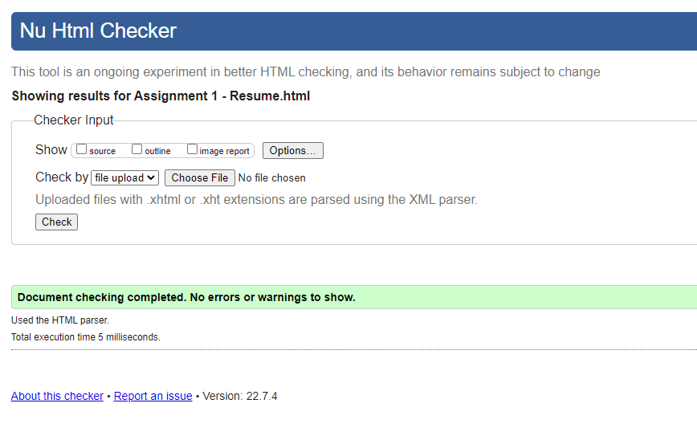

Dylan Johnson
12345 Johnson Street, Minneapolis, MN 55448
johnsond47@csp.edu
Goal
Recently graduated student with a degree in Computer Science looking to obtain a position as a developer.
Education
Work Experience
I have been working since I was 17. 8 Years of customer service experience working in restaurants.
2 Years as an Intern for Target Corporation where I spent most of my time learning different programming languages.
1 year working at Hamline University's help desk where I was responsible for all the technology on campus.
1 year with Anoka Hennepin schools as a technology paraprofessional where I was responsible for all technology in a school.
As well as, currently, 8 months for Ameriprise Financial where I have used these skills to automate daily processes.
- Hamline University Help Desk, 2015-2016
- Anoka Hennepin Schools, 2020-2021
- Bakers Square Restaurants, 2013-2021
- Ameriprise Financial, 2021-Present
Technical Skills
- Programming Languages
- Python
- SQL
- Java
- Command Line
- Batch
- Office Applications
- Microsoft Excel
- Microsoft Word
- Office 365
- Microsoft Outlook
- Operation Systems
- Windows XP - Windows 11
- Microsoft Server 2012 and newer
- MacOS
- Minimal Linux
